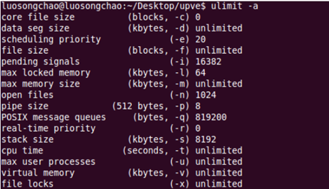

Adjusting the Thread Stack Size When There Are Many Threads
- Run the following command to check the resource limit:
ulimit -a
By default, the thread stack size is 8192 (8 MB). You can run the ulimit -s xxx command to change the default thread stack size.

- Modify the default thread stack.
- The default thread stack size is 8 MB.
- Use pthread_attr_setstack() to change the stack size. As shown in the following figure, change the stack size to 16 MB. The thread stack space is allocated from the heap.
pthread_attr_t attr; //Create a thread attribute variable. struct sched_param param; pthread_attr_init(&attr); //Initialize the thread attribute variable. pthread_attr_setstacksize (&attr, 16*1024*1024); //Change the stack size to 16 MB. pthread_attr_getschedparam(&attr, ¶m); //Thread priority param.sched_priority += 5; pthread_attr_setschedparam(&attr, ¶m)
- Create two threads and use the default stack size for execution.
- Do not use any thread.
- The thread stack is allocated from the process stack.
- Summary of the process stack and thread stack:
- The size of the process stack is determined when the process stack is executed, which is irrelevant to the compilation link.
- The size of the process stack is determined randomly. It is at least greater than the size of the thread stack, but is not more than twice the size of the thread stack.
- The thread stack size is fixed. You can run the ulimit -a command to view the thread stack size and run the ulimit -s command to change the thread stack size.